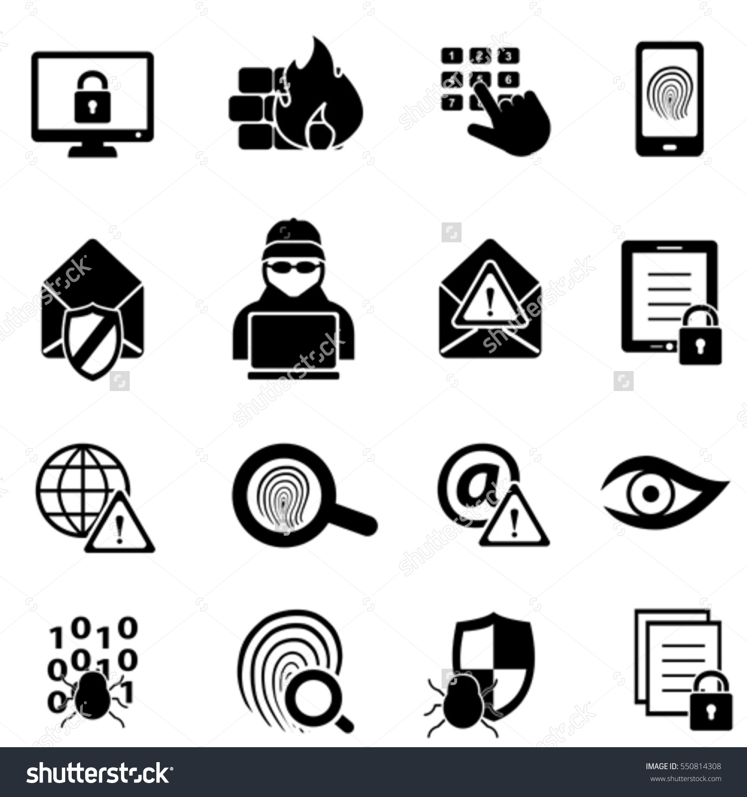

Análisis de riesgos informáticos
Es un proceso que comprende la identificación de activos informáticos, sus vulnerabilidades y amenazas a los que se encuentran expuestos así como su probabilidad de ocurrencia y el impacto de las mismas, a fin de determinar los controles adecuados para aceptar, disminuir, transferir o evitar la ocurrencia del riesgo.
Teniendo en cuenta que la explotación de un riesgo causaría daños o pérdidas financieras o administrativas a una empresa u organización, se tiene la necesidad de poder estimar la magnitud del impacto del riesgo a que se encuentra expuesta mediante la aplicación de controles. Dichos controles, para que sean efectivos, deben ser implementados en conjunto formando una arquitectura de seguridad con la finalidad de preservar las propiedades de confidencialidad, integridad y disponibilidad de los recursos objetos de riesgo.
Imagen_2
Video_1
 Puede realizar las siguientes actividades prácticas, enfocadas a la prevención y corrección de posibles riesgos informáticos que se presentan a frecuentemente, para realizar la actividad de Clic en el link dispuesto para ello. Actividad Practica
Puede realizar las siguientes actividades prácticas, enfocadas a la prevención y corrección de posibles riesgos informáticos que se presentan a frecuentemente, para realizar la actividad de Clic en el link dispuesto para ello. Actividad Practica
Imagen_1. Seguridad “Seguridad Informática,” por Shutterstock, https://www.shutterstock.com/ . Copyright. Reimpresión autorizada.
Imagen_2. Seguridad “Tipos”, por Shutterstock, https://www.shutterstock.com/ . Copyright. Reimpresión autorizada.
Video_1. Seguridad “Seguridad Informática,” por defero, https://www.youtube.com/ . Copyright. Reimpresión autorizada.